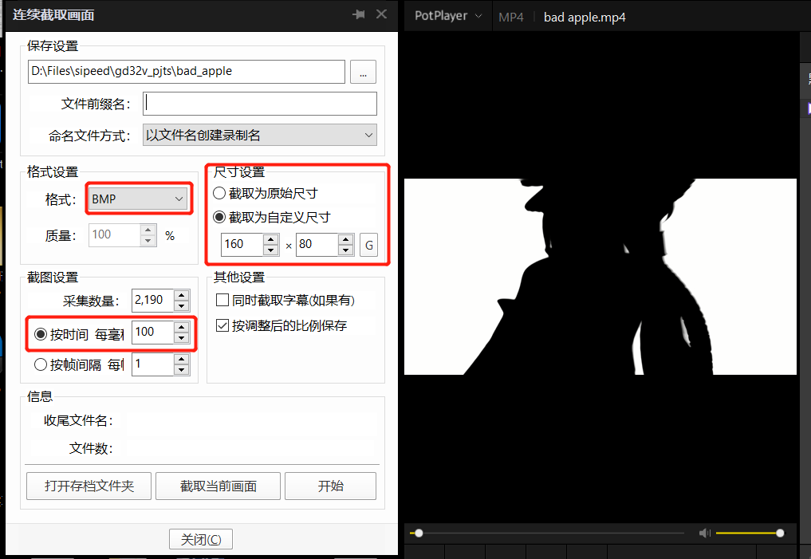
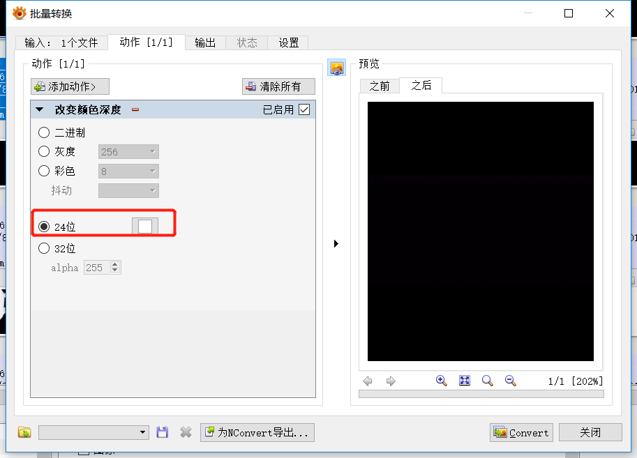

中文
中文Bad Apple 演示视频
本文目的是使用板载的 160*80 分辨率的 OLED 屏幕播放 bad apple 视频
主要工作介绍
- 移植 OLED 屏幕的驱动
- 移植 tf 卡驱动和 fatfs 文件系统
- 将视频按自己需要的帧率转换为一帧帧的图片然后打包到 tf 卡
- 在 gd32v 上读取 tf 卡中的图片并进行显示
屏幕驱动
使用硬件 SPI 驱动屏幕，首先需要初始化 SPI
void spi_config(void)
{
spi_parameter_struct spi_init_struct;
/* deinitilize SPI and the parameters */
OLED_CS_Set();
spi_struct_para_init(&spi_init_struct);
/* SPI0 parameter config */
spi_init_struct.trans_mode = SPI_TRANSMODE_FULLDUPLEX;
spi_init_struct.device_mode = SPI_MASTER;
spi_init_struct.frame_size = SPI_FRAMESIZE_8BIT;
spi_init_struct.clock_polarity_phase = SPI_CK_PL_HIGH_PH_2EDGE;
spi_init_struct.nss = SPI_NSS_SOFT;
spi_init_struct.prescale = SPI_PSC_8;
spi_init_struct.endian = SPI_ENDIAN_MSB;
spi_init(SPI0, &spi_init_struct);
spi_crc_polynomial_set(SPI0,7);
spi_enable(SPI0);
}
初始化完成后就可以实现数据指令的发送
void LCD_Writ_Bus(u8 dat)
{
OLED_CS_Clr();
while(RESET == spi_i2s_flag_get(SPI0, SPI_FLAG_TBE));
spi_i2s_data_transmit(SPI0, dat);
while(RESET == spi_i2s_flag_get(SPI0, SPI_FLAG_RBNE));
spi_i2s_data_receive(SPI0);
OLED_CS_Set();
}
void LCD_WR_DATA8(u8 dat)
{
OLED_DC_Set();//写数据
LCD_Writ_Bus(dat);
}
void LCD_WR_DATA(u16 dat)
{
OLED_DC_Set();//写数据
LCD_Writ_Bus(dat>>8);
LCD_Writ_Bus(dat);
}
void LCD_WR_REG(u8 dat)
{
OLED_DC_Clr();//写命令
LCD_Writ_Bus(dat);
}
LCD_Writ_Bus 完成了 SPI 的收发，通过控制命令数据线，完成命令和数据的发送
OLED 屏幕在使用前还需要设置它的一些参数，比如屏幕开启、数据帧的格式等等，这些在参数在屏幕初始化的时候，通过写命令再写数据的方式写入。想修改这些参数需要依靠屏幕配套的数据手册，不过一般可以参数屏幕生产商提供的例程中的参数。
tf 卡驱动和 fatfs 文件系统
tf 卡在 longan 上也是使用 SPI 驱动的。为了更快的访问速率，也是使用硬件 SPI 驱动。使用前也需要初始化，方式和屏幕的 SPI 初始化类似，就不再累述。
fatfs 是一个专为小型嵌入式设备设计的文件系统。fatfs 符合 ANSI C(C89)规范，并且和磁盘 I/O 层完全分离。
具体的移植也很简单，直接参照 fatfs 提供的 stm32 的工程移植进行
这里提供该工程的下载地址，完整版可以去 fatfs 的官网下载
主要的工作在于实现 fatfs 的几个基本函数 disk_initialize disk_status disk_read disk_ioctl
这些函数又是基于 SPI 通信的，还需要修改 SPI 接收发送的实现
static
BYTE xchg_spi (
BYTE dat /* Data to send */
)
{
while(RESET == spi_i2s_flag_get(SPI1, SPI_FLAG_TBE));
spi_i2s_data_transmit(SPI1, dat);
while(RESET == spi_i2s_flag_get(SPI1, SPI_FLAG_RBNE));
return(spi_i2s_data_receive(SPI1)); /* Return received byte */
}
static
void rcvr_spi_multi (
BYTE *buff, /* Pointer to data buffer */
UINT btr /* Number of bytes to receive (even number) */
)
{
do
{
*buff = xchg_spi(0xff);
buff++;
} while (btr--);
}
视频预解码
mp4 格式的视频，单片机因为没有硬件的加速，无法胜任解码播放的工作，所以只能靠手工预解码，相当于按照一定的帧率对原视频进行截图
这里需要使用到 PotPlayer XnViewMP
首先使用 PotPlayer 打开视频，快捷键 ctrl+G 打开连续截图
打开后如图

其中格式一定要 BMP，尺寸按照屏幕的尺寸设置，时间我这里设置的是 100ms 也就是 1s 十帧的样子，采集数量就自己计算一下视频总时间再乘每秒帧数，我这里就是 219s * 10 = 2190
最后得到的图片是 32位 的 BMP，转换起来不方便，就用 XnViewMP 转换为 24位 的 BMP
打开 XnViewMP ，选择要转换的图片，快捷键 ctrl+U 打开批量转换，在动作中选择 24位 进行转换，如图

然后就是将这些图片打包到 tf 卡，这里为了方便，修改了网上的一个开源项目 bmp2hex，重新整理了一个工具，可以点击下载
使用方法很简单，把下载的这个压缩包放到之前生成的图片集中，进行解压
使用工具前需要确保所有图片的名字是 数字.bmp ，不是的话可以先运行一遍 rename.py 这个脚本，直接在命令行输入 python rename.py 即可
根据自己图片总数修改 genhex.py 这个脚本的第4行中的数字，比如我有 2190张 图片，这里的数字就写 2190
然后就运行这个脚本，在命令行输入 python genhex.py，时间可能比较久，需要耐心等待
最后运行完毕后会生成一个 bmp.bin 文件，将这个文件放入到 tf 卡中即可
读取图片
最后的读取图片并显示其实很简单了，主要涉及到的就是文件操作，关于 fatfs 的 API 可以点击这里阅读
首先需要将 tf 卡挂载到文件系统，这里需要使用到 f_mount 这个函数
fr = f_mount(&fs, "", 1);
挂载上后，就找到对应的文件然后打开，这里涉及到 f_open
fr = f_open(&fil, "bmp.bin", FA_READ);
文件打开后，就可以读取图片信息并显示了，这里 160*80 尺寸的 16位真彩图片，一张有 25600 字节，longan 上的处理器无法直接创建一个这么大的数组，所以只能分两次进行读取，每次读取完进行一次偏移，最后通过循环读取总共的 2189 张图片，这里涉及到 f_read f_lseek
for (int i=0; i<2189;i++)
{
fr = f_read(&fil, image, sizeof(image), &br);
LCD_ShowPicture(0,0,159,39);
offset += 12800;
f_lseek(&fil, offset);
LEDB_TOG;
fr = f_read(&fil, image, sizeof(image), &br);
LCD_ShowPicture(0,40,159,79);
offset += 12800;
f_lseek(&fil, offset);
LEDB_TOG;
}
最后，本工程可以到 github 下载体验，点击进行传送